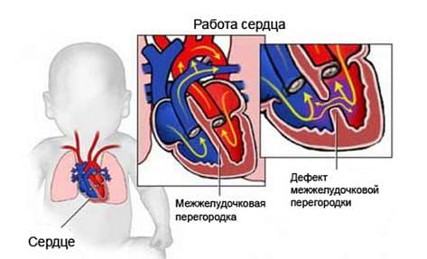

К счастью, родители (и педиатры) довольно редко сталкиваются с проблемами сердца у детей. Многие врожденные пороки сердца в действительности проходят в течение одного-двух лет. Серьезные проблемы с сердцем встречаются крайне редко. С другой стороны, сердечные шумы — довольно распространенное явление. Хотя шум может означать наличие порока сердца, большинство шумов обычны у младенцев. Ниже приводится основная информация о сердечных шумах и пороках сердца и о том, как вы и ваш врач можете сотрудничать, чтобы побороть их.
СЕРДЕЧНЫЕ ШУМЫ
Термин «сердечный шум» описывает необычный гудящий звук, который слышен, когда врач слушает биение сердца ребенка. Как правило, сердце, если его прослушивать через стетоскоп, издает два отчетливых стука: знакомое «тук-тук», по мере того как сердце сжимается и расслабляется, выполняя свою функцию перекачивания крови в теле. Любой звук, который слышен помимо нормального «тук-тук», принято считать сердечным шумом. У шумов может быть множество различных причин, и они в действительности довольно распространены у новорожденных и реже встречаются у детей старшего возраста. Большинство сердечных шумов — не повод для беспокойства и со временем проходят сами по себе. Тихие сердечные шумы (1-й и 2-й уровень шкалы), напоминающие мелодичное жужжание, слышные громче всего слева от грудины и появляющиеся между «тук» и «тук», обычно считаются нормальными.
Сердечные шумы характеризуют, основываясь на несколько факторах, включающих:
|
Для обозначения нормального шума употребляются различные термины: невинный, функциональный или шум Стилла (в честь врача, который первым описал их). Около 95% всех сердечных шумов в детском возрасте — невинные шумы. Они происходят из-за того, что кровоток в маленьком сердечке ребенка иногда может быть довольно неспокойным (по сравнению с большим сердцем взрослого, в котором больше места для спокойного течения крови). Именно это беспокойное течение слышно в качестве шума при помощи стетоскопа. Услышав невинный шум, врач может решить, что необходимо просто наблюдать за ним при обычных плановых осмотрах. Этот шум обычно проходит сам по себе по мере того, как ребенок взрослеет и его сердце растет.
КОГДА БЕСПОКОИТЬСЯ
Если невинный шум начинает каким-либо образом меняться, может потребоваться дальнейшее исследование сердца с помощью ультразвука (ультразвуковая кардиография или эхокардиография), чтобы убедиться в отсутствии нарушений в сердце. Если вновь обнаруженный сердечный шум имеет характеристики, не типичные для невинного шума, ваш врач, возможно, направит вас на УЗИ для того, чтобы исключить вероятность каких-либо пороков сердца.
На ультразвуковое обследование должен быть немедленно направлен любой ребенок с сердечными шумами, у которого появляются следующие признаки нарушений работы сердца:
У детей старшего возраста и подростков могут появиться следующие симптомы, которые могут указывать на порок сердца:
Это признаки возможного порока сердца, из-за которого сердцу приходится прикладывать все больше усилий для перекачивания крови и кислорода по телу. Немедленно обратитесь к врачу.
ПОРОКИ СЕРДЦА
При развитии плода могут образоваться различные нарушения строения сердца. К счастью, большинство из них так редко встречаются, что нет необходимости описывать подробности каждого порока в этой книге. Но мы бы хотели поделиться с вами информацией о двух самых распространенных пороках, если вы вдруг столкнетесь с этой проблемой у своего ребенка. Ваш врач может заподозрить порок сердца у ребенка, основываясь на характеристике звука сердечного шума и наличии любого из вышеперечисленных симптомов.
Дефекты межпредсердной или межжелудочковой перегородки (ДМПП/ ДМЖП). Это наиболее распространенные пороки сердца, с которыми дети могут родиться. К счастью, они также наименее серьезные и часто сами проходят по мере роста сердца. Когда ребенок развивается в матке, в мышечной стенке, разделяющей правую и левую части сердца, есть одно или несколько отверстий, которые позволяют крови перетекать между двумя частями (что необходимо для жизни плода). При рождении эти отверстия закрываются, так как легкие начинают насыщать кровь кислородом и кровообращение новорожденного изменяется (крови больше не нужно течь непосредственно между правой и левой сторонами). Когда одно или более из этих отверстий не закрываются полностью, остается дефект, не заращение перегородки. Если этот дефект расположен в верхней части сердца, он называется дефектом межпредсердной перегородки. В нижней части сердца — дефект межжелудочковой перегородки.
После рождения кровь продолжит течь через это отверстие и создавать гудящий шум, который слышит врач. Диагноз можно подтвердить с помощью ультразвука. Степень серьезности этой проблемы зависит от положения и размера дефекта. Большинство отверстий маленькие и зарастают сами по себе, по мере того как ребенок взрослеет. Большие отверстия могут не закрыться, шумящий звук останется, и может потребоваться хирургическое вмешательство, чтобы исправить дефект в первые годы жизни. Детский кардиолог будет наблюдать за вашим ребенком и примет решение о необходимости и времени проведения операции.

Узкие или нефункционирующие сердечные клапаны. В сердце есть четыре разных клапана, которые открываются и закрываются, позволяя крови течь через сердце и попадать во все остальные сосуды. Нормальный звук «тук-тук» создается открытием и закрытием этих клапанов. Если один из клапанов узкий или не функционирует должным образом, будет слышен явный сердечный шум. Проблемы с клапанами могут быть врожденными или развиться позже в течение жизни. Для диагностики дефектов клапана используется ультразвук, и затем ребенок будет находиться под наблюдением педиатра-кардиолога, который определит необходимость операции по исправлению клапана и срок ее проведения.
ФАКТОРЫ РИСКА
Некоторые новорожденные подвергаются большему риску родиться с пороком сердца. Сюда относятся:
Здоровье ребенка от докторов Сирс / Сирс У. и др.